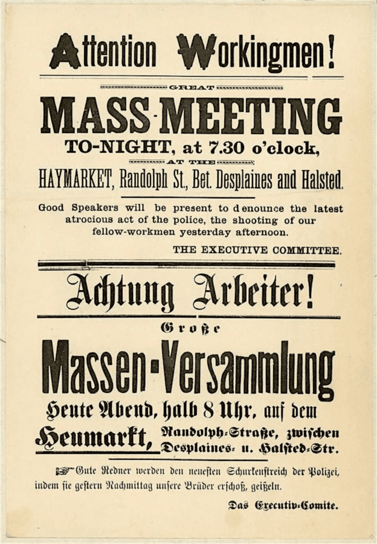

Chicago’s German-Jewish Labor History with Ben Schacht and Matthew Schlerf
Celebrate Labor History Month with us this May with this presentation by Ben Schacht and Matthew Schlerf on their research into German-Jewish labor relations in Chicago at the turn of the twentieth century.
REGISTER HERE: https://www.eventbrite.com/e/chicagos-german-jewish-labor-history-with-ben-schacht-and-matthew-schlerf-tickets-1988133927095
This presentation will provide context for their summer 2026 walking tours about Chicago’s German-Jewish labor history, produced by Chicago Shpatz with support from the Goethe-Institut Chicago. Their guided tour of Randolph Street will use methods of street theater and historical reenactment to illustrate how Jewish immigrants and activists moved from the background of the 1886 Haymarket Affair to the foreground of the 1910 Chicago Garment Strike. Topics covered will include the political and industrial revolutions of 1848, German and Jewish immigration to Chicago, the Civil War and the Great Chicago Fire, the use of Turnverein (or Turner Halls) and Hull-House as hubs for social activism, Chicago’s German and Yiddish press, the eight-hour day movement, and the class divide (and subsequent historical biases) between machers and shnorrers in Chicago’s early Jewish community.
This program is presented in partnership with the Chicago YIVO Society, the Chicago Jewish Historical Society, and the Illinois Labor History Society.
Please register in advance and bring a state- or federally-issued photo ID for check-in in the 150 N. Michigan building lobby. Light refreshments will be served.
ABOUT THE SPEAKERS
Ben Schacht is a writer, educator, and board member of the Chicago YIVO Society. He holds a PhD in comparative literature from Northwestern University.
Matthew Schlerf is a performer, tour guide, and community organizer. He holds an MFA in collaborative theatre making from Rose Bruford College in London. This July, Ben and Matthew will co-teach an adult education course at the Newberry Library titled “A Social History of Yiddish Chicago” (details forthcoming).